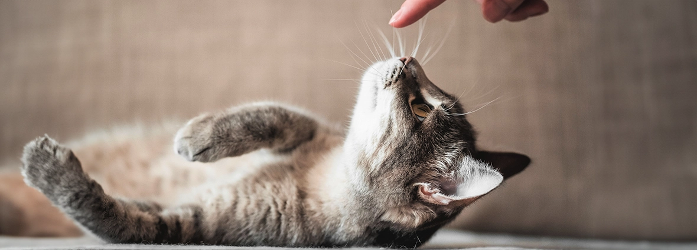

Если вы намерены заняться дрессировкой кошки, настраивайтесь на длительную работу. Если вы хотите, чтобы она ходила рядом, подавала лапу как собака, то придется приложить немалые усилия. Действовать по чьей-то указке коты не склонны, но это не значит, что надо отказаться от мысли научить животное, например, приносить игрушку.
Если кошка не заинтересована в дрессировке, исправить это сложно. В поведении домашних кошек пока еще много неясного, но хорошо известно, что они учатся на собственном опыте. Если он приятный, то будут его повторять, если неприятный – будут избегать тех ситуаций, в которых он получен. При этом они вряд ли станут делать то, что для них неестественно. Подумайте над этим принципом, решая, как обучить кошку командам. И не ругайте животное, если оно не понимает команды.

Ответ на вопрос, поддаются ли кошки дрессировке, зависит от того, сумеете ли вы понять вашего питомца и правильно использовать это знание.
Обучаем питомца основным командам и трюкам
Домашнего питомца можно обучить простым трюкам и командам, но для начала надо выяснить, какая награда его мотивирует. Котятам интересно все, так как они еще изучают новый мир. Пожилую кошку не прельстишь игрой – ей хочется лежать в тишине и покое. Взрослому питомцу нравится строгий порядок, к которому он привык, поэтому его желание – чтобы в жизни ничего не менялось.
Попробуйте использовать в качестве поощрения лакомства. Если животное активное, сделайте дрессировку элементом ежедневных игр. Общительным лучшей наградой может стать ваша ласка.

Самый верный подход к самой дрессировке – замечать, когда животное будет совершать какое-либо обычное для него действие, и поощрять его. Итак, разбираем подробно, как научить кота командам.
«Сидеть»
Сядьте на пол, чтобы быть на одном уровне с питомцем. Как только он начнет присаживаться, скомандуйте «Сидеть», и когда он сядет, поощрите. Отметим, что эту команду можно отрабатывать в тот момент, когда учите котенка ходить в туалет.
«Дай лапу»
Сядьте напротив кота, аккуратно поднимите одну из его передних лап и произнесите команду, а другой рукой дайте лакомство. Проделайте упражнение несколько раз, затем просто подайте команду и протяните руку, но не трогайте питомца. Если он сделает попытку поднять лапу, пожмите ее и снова наградите.
«Лежать»
Действуйте так же, как с командой «сидеть». Когда кот начнет устраиваться на своей лежанке, скомандуйте «Лежать», затем похвалите.
«Нельзя»
Если вы видите, что кот собирается сделать что-то, что вам не нравится, произнесите твердым голосом команду «Нельзя» или «Фу». Выберите одно из этих слов и используйте всегда. Если слова не сработали, аккуратно остановите питомца, чтобы он не смог совершить действие. Со временем у кота выработается ассоциация, что «Нельзя» означает, что надо остановиться.
«Голос»
Поводите лакомством перед носом кошки, затем поднимите выше или уберите за спину. Дождитесь, когда она скажет отчетливое «Мяу», и отдайте лакомство. Тренировку проводите перед едой, когда животное проголодалось.
«Апорт»
Эту команду будет легко выучить с котенком, который сам любит носить различные предметы. Привяжите колечко на шнурок и бросьте котенку. Когда он принесет его вам, похвалите, дайте лакомство. Если он изменит свои планы, потяните за шнурок и произнесите команду. Снова наградите лакомством, если испытание пройдено успешно.
Прыжки
Прыжки через обруч (и не только) – отличный трюк для активных кошек. Если ваш питомец любит прыгать, вам останется только давать соответствующую команду во время игры и поднимать игрушку повыше, после чего хвалить животное. Вариант для менее активных кошек: предложите питомцу запрыгнуть, например, на диван через обруч. Поднимите круг перед ним, когда он приготовится к прыжку, и покажите лакомство. После того как он выполнит трюк, похвалите и поощрите заслуженной наградой.
Кувырки
Улучите момент, когда кот будет лежать. Занесите ему за лопатки угощение, но так, чтобы он заметил ваш маневр. Питомец начнет поворачиваться, чтобы ухватить лакомство. Помогите ему в этом, слегка подтолкнув под бок. Как только он перекатится на другой бок, вручите лакомство и похвалите. Можно повторить упражнение несколько раз.
Советы по дрессировке кошек
Озвучим несколько полезных советов, которые помогут сделать обучение приятным и для хозяина, и для животного.
- Каждое занятие должно продолжаться не больше 3–5 минут, иначе животное быстро устанет и потеряет интерес.
- Завершайте тренировку на успешной попытке. Если у кота не получилось выполнить нужное действие, аккуратно помогите ему и поощрите.
- Угощайте питомца специальным лакомством для кошек. При этом не забывайте соблюдать рекомендованную норму лакомства, указанную на упаковке.
- Кошки не умеют справляться с несколькими задачами одновременно, поэтому разучивайте команды по одной. Дождитесь, когда питомец научится сидеть, потом переходите к команде «дай лапу» и так далее.
- Если вы используете новые тренировочные аксессуары, дайте животному время, чтобы с ними познакомиться, обнюхать в спокойной обстановке.
- Привлекайте к дрессировке всех членов семьи. Если питомец еще маленький, это поможет ему в социализации. Еще таким образом ваши домочадцы научатся взаимодействовать с животным, верно реагировать на правильное и нежелательное поведение.
- Если вы пытаетесь отучить питомца от вредных привычек, то будьте последовательны. Например, если хотите, чтобы он не выпрашивал еду, не реагируйте на такое поведение. Не нужно угощать его в один день и запрещать в другой.
Смотрите по характеру и возрасту, каким командам можно научить кошку. Не заставляйте ее делать то, что причиняет ей дискомфорт или не нравится. Например, вряд ли пожилое животное будет радо прыгать через обруч, а для котенка это может быть сложно.
Что нельзя делать при дрессировке кота
Наберитесь терпения и не торопите котенка. Не ждите, что он освоит все трюки за несколько дней. Если вы будете слишком эмоциональны, то можете напугать животное и отбить желание тренироваться. Кошки очень чувствительны, учитывайте это при выборе методов воспитания и способов дрессировки. Всегда заканчивайте общение на позитивной ноте, чтобы ежедневно давать питомцу приятный положительный опыт.